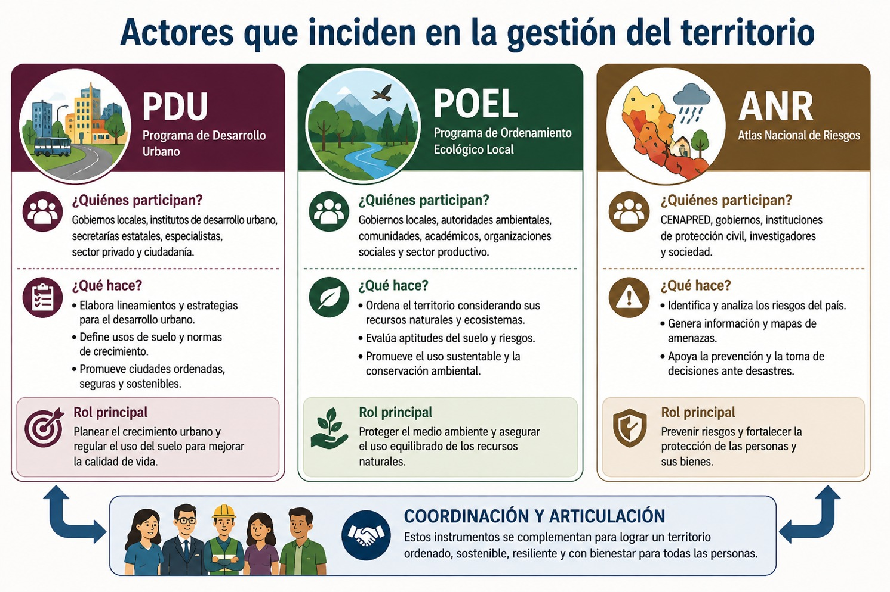
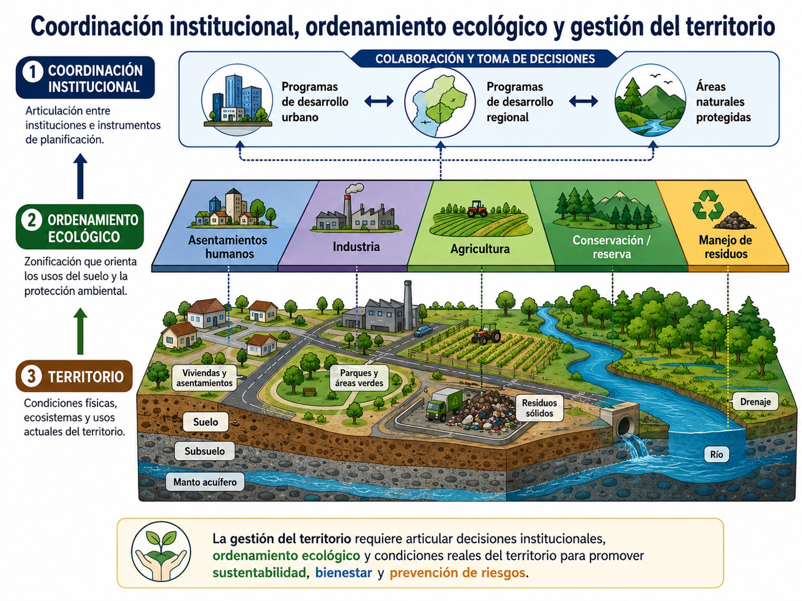
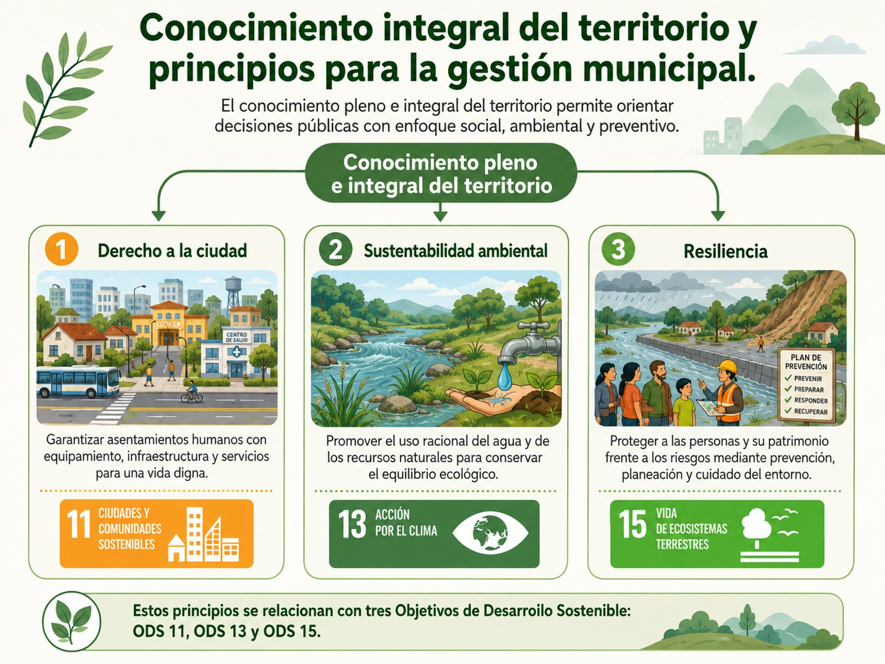

En el saber anterior analizamos cómo construyes tu subjetividad en relación con el contexto histórico, la cultura, la familia y la vida cotidiana, y cómo puedes pasar de una posición pasiva frente a tu realidad hacia formas de implicación individual y colectiva. Este proceso adquiere una dimensión concreta cuando dejas de entender los problemas de tu comunidad como asuntos exclusivamente individuales y comienzas a participar junto con otras personas en su identificación, análisis y transformación.
Es aquí donde aparece una cuestión fundamental para la RSU:
¿quién conoce el territorio, quién decide sobre él y quién participa en las decisiones que determinan su futuro?
La participación comunitaria no puede entenderse solamente como la presencia de personas en una reunión, la aplicación de una encuesta o la consulta posterior sobre decisiones que otras instituciones ya tomaron. En esta UCA vamos a partir de una concepción mucho más profunda pues participar significa intervenir, implicarse, construir conocimientos, identificar necesidades, formular alternativas, tomar decisiones, actuar y evaluar colectivamente los resultados.
Gómez Labrada (s/f), sostiene precisamente que el desarrollo comunitario no debería concebirse como un trabajo realizado para la comunidad, ni simplemente en ella o incluso con ella, sino como un proceso de transformación desde la comunidad, pensado, planificado, conducido, ejecutado y evaluado por sus propios integrantes. Esta idea modifica profundamente la relación entre universidad, comunidad y territorio.
El territorio no es solamente un espacio geográfico
Cuando escuchamos la palabra territorio podemos pensar inicialmente en un mapa, una colonia, una alcaldía, un municipio o una determinada extensión de tierra. Sin embargo, desde una perspectiva social, el territorio representa mucho más. Podemos partir de la definición del territorio como un espacio geográfico en el que se desarrollan relaciones políticas, económicas, sociales y culturales construidas histórica y socialmente, las cuales proporcionan a las personas sentidos de identidad y pertenencia. El territorio comprende además dimensiones relacionadas con los usos del suelo, la gestión ambiental y la identificación de riesgos.
Macías Reyes (s.f), complementa esta perspectiva al señalar que una comunidad se desarrolla dentro de una determinada área geográfica, pero ese espacio se convierte en comunidad porque ahí existen necesidades, intereses, valores, relaciones, responsabilidades, formas de organización, prácticas cotidianas, memorias, aspiraciones y proyectos compartidos. El territorio es, por tanto, simultáneamente un espacio físico y un espacio humano.
Esto significa que para comprender un territorio debemos observar al menos dos dimensiones inseparables:
- 1. Territorio material: agua, suelo, vivienda, caminos, transporte, infraestructura, áreas verdes, recursos naturales, equipamientos, actividades productivas, residuos, riesgos y servicios.
- 2. Territorio social y cultural: memoria, identidades, tradiciones, redes de apoyo, formas de organización, relaciones de poder, conflictos, conocimientos locales, actividades económicas, necesidades, aspiraciones y significados atribuidos a los lugares.
Por ello, conocer un territorio no equivale únicamente a describir qué existe, sino también a comprender cómo viven las personas, qué significado atribuyen a los espacios, qué problemas enfrentan, qué recursos poseen y qué territorio desean construir. En el siguiente diagrama puedes observar estas dos dimensiones:

Planificar y ordenar el territorio es decidir sobre el presente y el futuro
Ahora que sabemos que un territorio tiene dos dimensiones inseparables, debemos estar conscientes que planificar un territorio significa tomar decisiones respecto de la manera en que se utilizan, protegen, distribuyen y transforman sus recursos y espacios. Ahora bien, la noción de ordenamiento territorial abarca la planificación y la gestión implicando un proceso continuo e iterativo que organiza el territorio de manera armónica, maximizando el consenso y minimizando conflictos entre actores sociales y el Estado para alcanzar un desarrollo equitativo.
Es por ello que, el ordenamiento territorial es un proceso de carácter técnico-político sustentado en la participación ciudadana. Su propósito consiste en configurar la ocupación del territorio para construir un modelo de desarrollo territorial socialmente consensuado, equilibrar las actividades económicas con el medio ambiente y generar mejores condiciones de vida dentro de un marco de sostenibilidad.
Esta definición es importante porque muestra que el ordenamiento territorial posee dos dimensiones:
Por una parte, existe una dimensión técnica. Para tomar decisiones es necesario contar con información sobre población, suelo, vivienda, infraestructura, movilidad, recursos naturales, riesgos, ecosistemas, economía y servicios.
Pero también existe una dimensión social y política, porque cualquier decisión territorial produce consecuencias diferentes para distintos grupos.
Decidir dónde construir una vialidad, dónde instalar infraestructura, cómo gestionar el agua, qué espacios conservar, qué actividades económicas promover, cómo manejar los residuos o dónde localizar determinados servicios implica responder preguntas como:
- • ¿Quién obtiene los beneficios?
- • ¿Quién asume los costos?
- • ¿Quién utiliza el territorio?
- • ¿Quién queda excluido?
- • ¿Quién participa en la decisión?
- • ¿Quién posee conocimiento sobre ese espacio?
Por ello, la planificación y ordenación territorial nunca es completamente neutral.
Participar significa poder intervenir en las decisiones
Ahora bien, debemos revisar qué significa realmente participar por ello es importante diferenciar entre ser consultado y participar efectivamente. Marchioni, citado por Gómez Labrada (s.f), plantea que no puede solicitarse participación sobre algo que ya se encuentra completamente decidido. En ese caso las personas no estarían participando, sino siendo convocadas para aceptar una decisión previamente tomada. Desde esta perspectiva: participación, toma de conciencia y cambio, constituyen procesos relacionados entre sí.
La participación auténtica supone entonces abrir posibilidades reales para intervenir en preguntas fundamentales:
- • ¿Cuál es el problema?
- • ¿Qué información necesitamos?
- • ¿Qué consideramos prioritario?
- • ¿Qué alternativas existen?
- • ¿Qué decidimos hacer?
- • ¿Cómo lo realizamos?
- • ¿Funcionó?
- • ¿Qué debemos modificar?
Por ello, una comunidad no debería aparecer únicamente al principio de un proyecto para proporcionar información, ni al final para recibir sus resultados. Observa el siguiente diagrama explicativo:

Como vemos, la comunidad debe participar durante todo el proceso: en el diagnóstico, priorización, planificación, decisión, ejecución, seguimiento, evaluación y nueva planificación si es necesario. Macías Reyes (s.f), señala que un proceso comunitario genuinamente participativo debe ser definido, proyectado, ejecutado y evaluado desde, con y por los miembros de la comunidad, respetando al mismo tiempo la identidad, los valores y las aspiraciones de los diferentes grupos que la integran.
Con ello, quienes integran la comunidad pasan de ser considerados beneficiarios a sujetos del desarrollo. Este cambio implica abandonar una concepción de la comunidad como simple beneficiaria pues quien se beneficia recibe algo que otra institución ha diseñado para ella. Por lo contario, una comunidad participante interviene en la definición del problema y en la construcción de las soluciones.
El desarrollo comunitario adquiere entonces un carácter autogenerado, porque parte de las necesidades, capacidades, recursos y aspiraciones de la propia comunidad; es integrador, porque articula diferentes dimensiones y actores; es permanente, porque la transformación no concluye con una sola intervención; es participativo, porque las personas intervienen en las decisiones; y es plural, porque reconoce diferentes identidades, experiencias y perspectivas. Puedes apreciar estas dimensiones en el siguiente diagrama:

Pero esto no significa que las comunidades deban resolver solas todos sus problemas, de hecho, gobiernos, universidades, organizaciones sociales, instituciones públicas, actores económicos y especialistas poseen responsabilidades y recursos diferentes. La participación busca precisamente construir formas de corresponsabilidad, evitando tanto el paternalismo institucional como la transferencia injusta de todas las responsabilidades hacia la comunidad.
La gestión territorial involucra múltiples actores.
La gestión territorial requiere de la utilización de diversos instrumentos vinculados con el desarrollo urbano, el ordenamiento ecológico y la gestión de riesgos y ello requiere coordinación institucional y participación social. También es importante destacar que en diferentes procesos pueden intervenir organizaciones vecinales, representantes de sectores privados y sociales, centros de investigación, instituciones educativas, medios de comunicación y demás participantes con interés en la preservación y desarrollo del territorio.
Ahora bien, desde la perspectiva de la RSU podemos ampliar esta relación incluyendo que las comunidades que habitan el territorio; los gobiernos y autoridades locales; las universidades; las organizaciones de la sociedad civil; los actores económicos; las instituciones educativas; colectivos ciudadanos; especialistas y profesionales; y grupos que históricamente han tenido menor capacidad para participar en las decisiones.
La presencia de múltiples actores genera una característica importante que debemos tomar en cuenta, y es que no todos poseen el mismo poder. Algunos disponen de recursos económicos, información especializada, capacidad institucional o acceso directo a quienes toman decisiones. Otros poseen conocimientos derivados de vivir cotidianamente el territorio, pero cuentan con menor capacidad para hacerlos visibles. Por ello, promover participación también significa construir condiciones para que diferentes voces puedan intervenir en condiciones más equitativas.
Participar se aprende participando
Gómez Labrada (s.f), formula una idea especialmente útil para la formación universitaria: la participación no puede aprenderse solamente como contenido teórico; se aprende mediante la práctica colectiva. La participación permite desarrollar comunicación, diálogo, creatividad, iniciativa, responsabilidad y capacidad para construir soluciones junto con otras personas. Esto resulta particularmente relevante para tu formación profesional pues puedes estudiar metodologías participativas en un aula, pero solamente comenzarás a comprender verdaderamente su sentido cuando tengas que escuchar perspectivas diferentes, reconocer conocimientos distintos de los tuyos, construir acuerdos, aceptar desacuerdos, compartir decisiones, asumir responsabilidades y evaluar colectivamente los resultados. Por eso, la participación posee también una dimensión formativa ya que no solamente transforma el territorio, transforma a quienes participan.
Es importante reflexionar que la comunidad no sólo tiene problemas: también posee capacidades. Una mirada exclusivamente diagnóstica puede cometer un error frecuente: aproximarse al territorio preguntando únicamente qué le falta. Sin embargo, las comunidades poseen conocimientos, memorias, redes sociales, capacidades organizativas, liderazgos, prácticas de cooperación, estrategias de cuidado, conocimientos ambientales, experiencias productivas y recursos culturales. Es por ello que Macías Reyes (s.f), destaca que la participación y el desarrollo comunitario deben aprovechar recursos económicos, materiales, culturales y humanos, fortalecer liderazgos y favorecer la autogestión de las comunidades.
En ese sentido, un diagnóstico territorial socialmente responsable debería trabajar simultáneamente con dos preguntas: qué problemas existen y qué capacidades existen para enfrentarlos. Este cambio es fundamental ya que así, la comunidad deja de aparecer solamente como espacio de carencias y comienza a reconocerse como productora de conocimiento, capacidades y alternativas.
Finalmente, pero no menos importante, debemos decir que en nuestro país existen participantes institucionales que inciden en la gestión del territorio: la Secretaría de Desarrollo Agrario, Territorial y Urbano (SEDATU) emitió los lineamientos simplificados para la elaboración del Plan o Programa de Desarrollo Urbano; la Secretaría de Medio Ambiente y Recursos Naturales (SEMARNAT) emitió su programa sectorial 2019-2024 así como los lineamientos de los Programas de Ordenamiento ecológico, también el Centro Nacional de Prevención de Desastres (CENAPRED) que se encarga de la ordenación territorial a través de sus distintos instrumentos institucionales, observa los siguientes diagramas:


En coordinación interinstitucional y con la participación de la comunidad se puede lograr identificar y definir una estrategia ecológica, determinar el uso de uso y aprovechamiento de los predios, y señalar fenómenos que puedan causar daños o pérdidas; todo esto siempre en colaboración con quienes habitan ese territorio. Finalmente, es importante decir que el conocimiento pleno e integral del territorio por parte de las autoridades municipales, podrá garantizar tres principios:
- Derecho a la ciudad: garantizar asentamientos humanos con equipamiento y servicios.
- Sustentabilidad ambiental: promover el uso racional del agua y de los recursos naturales.
- Resiliencia: proteger a las personas y su patrimonio frente a los riesgos.
- Así mismo es importante decir que estos principios están relacionados con tres objetivos del desarrollo sostenible:
- Objetivo 11. Ciudades y comunidades sostenibles.
- Objetivo 13. Acción por el agua.
- Objetivo 15. Vida de ecosistemas terrestres.
Observa el siguiente diagrama:

- Buzai, G. D.(2023). Geografía local y metodologías de diagnóstico territorial para proyectos comunitarios. Anales de Geografía de la Universidad Complutense, 43(1), 89–111. https://doi.org/10.5209/aguc.86432
- Gaete-Quezada, R.(2020). Dirección estratégica y responsabilidad social universitaria: Mecanismos de vinculación con los stakeholderslocales. Revista de la Educación Superior, 49(194), 23–42. https://doi.org/10.36857/resu.2020.194.1124
- Gómez, Aida (s/f). La participación, categoría fundamental para el autodesarrollo comunitario. Experiencias y reflexiones. Mimeo.
- Hernández-Sampieri, R., y Mendoza, C. P.(2018). Metodología de la investigación: Las rutas cuantitativa, cualitativa y mixta. McGraw-Hill.
- Macías, R. (s.f). Metodología para el desarrollo comunitario. Mimeo. Centro Universitario Vladimir Ilich Lenin de Las Tunas. Cuba.
- Martí-Noguera, J. J., Calderón, A. I., y Fernández-Godenzi, A.(2022). La responsabilidad social universitaria en el contexto local: Herramientas para el diagnóstico del territorio. Revista Iberoamericana de Educación Superior, 13(36), 45–62.
- UNESCO.(2022). Las universidades y su entorno: Estrategias de vinculación cultural y comunitaria para el desarrollo sostenible. Instituto Internacional de la UNESCO para la Educación Superior en América Latina y el Caribe (IESALC).
Te recomendamos ver estos videos para profundizar sobre el tema:
Estrategias para recabar información de la cultura y el entorno geográfico local en la Responsabilidad Social Universitaria
Si una universidad quiere contribuir responsablemente a la transformación de un territorio, necesita comenzar por conocerlo. Pero conocer un territorio no significa llegar con un cuestionario prediseñado, obtener datos y retirarse. Desde una perspectiva participativa, recabar información debe constituir un proceso de construcción compartida de conocimiento. Entonces la pregunta no sería únicamente respecto a cómo obtenemos información de la comunidad sino también cómo podemos producir conocimiento con la comunidad para comprender su territorio y actuar responsablemente sobre él. Esto es sumamente importante para la RSU pues para actual responsablemente con una comunidad primero necesitamos comprenderla y para ello, a su vez, debemos aproximarnos simultáneamente a su cultura local y a su entorno geográfico.
Como hemos visto anteriormente, existen dos dimensiones que debemos comprender: la cultural y la territorial. La primera, incluye, entre otros aspectos, historia y memoria colectiva, valores, creencias, tradiciones, lenguas, identidades, celebraciones, prácticas familiares, saberes locales, actividades económicas, formas de cuidado, relaciones sociales, organizaciones comunitarias, liderazgos, conflictos, percepciones y aspiraciones. La dimensión territorial, por su parte, comprende usos del suelo, vivienda, infraestructura, servicios, movilidad, agua, recursos naturales, ecosistemas, residuos, actividades productivas, áreas verdes, zonas de riesgo, equipamientos, barreras de accesibilidad y transformaciones ambientales.
Estas dos dimensiones deben analizarse conjuntamente porque la comunidad es simultáneamente una red de relaciones socioculturales y un espacio geográfico vivido. Conocer el territorio sin conocer a las personas produce información incompleta y, a su vez, conocer a las personas sin comprender las condiciones territoriales donde viven también produce información incompleta.
Complementar diferentes formas de conocimiento
Macías Reyes (s.f), propone una complementariedad metodológica que permita utilizar conjuntamente perspectivas cuantitativas y cualitativas. El conocimiento territorial puede requerir censos, registros o cuestionarios, pero también observación, entrevistas, testimonios, mapas, recorridos y diálogos comunitarios. No existe, por tanto, una única estrategia suficiente. Una universidad socialmente responsable y universitarios socialmente responsables deberían combinar diferentes instrumentos para aproximarse al territorio desde múltiples perspectivas. A continuación te presentamos algunos de ellos:
1. Cartografía social: permite construir mapas del territorio incorporando la mirada de quienes lo habitan. No se trata solamente de señalar calles y edificios. Las personas pueden localizar: zonas inseguras, fuentes de agua, espacios de convivencia, áreas contaminadas, barreras de movilidad, lugares significativos, servicios disponibles, patrimonio cultural, recursos comunitarios, zonas de riesgo, conflictos territoriales o espacios con potencial para desarrollar proyectos. Este instrumento está asociado al entorno geográfico y su resultado puede ser un mapa de riesgos y potencialidades del territorio validado por las personas vecinas. Esta última idea es esencial, que deba estar validado por la comunidad ya que el mapa generado por los universitarios no sustituye la experiencia territorial de quienes viven allí. Por ejemplo, una base cartográfica puede señalar que existe un centro de salud a determinada distancia. Sin embargo, las personas pueden indicar que llegar hasta él resulta difícil por falta de transporte, inseguridad, pendientes, barreras físicas o determinados horarios. El dato espacial y la experiencia cotidiana se complementan.
2. Recorridos territoriales y observación: puede hacerse a través de recorridos de áreas, visitas domiciliarias y observación, acompañados por instrumentos como diarios de campo, mapas y fotografías. Un recorrido permite observar aspectos difíciles de comprender únicamente desde estadísticas, por ejemplo, nos permite saber cómo se utiliza un parque, dónde se acumulan residuos, qué rutas utilizan las personas, dónde existen barreras de accesibilidad, qué lugares generan sensación de inseguridad, dónde se producen actividades comerciales, qué zonas se inundan o cómo se relacionan diferentes usos del suelo. Cuando estos recorridos se realizan junto con habitantes de la comunidad adquieren mayor valor, porque el territorio deja de ser solamente observado y comienza a ser interpretado por quienes lo viven.
3. Etnografía y observación de la vida cotidiana: la etnografía permite aproximarse a prácticas, relaciones, significados y formas de convivencia por ejemplo, puede utilizarse para conocer las distintas formas de organización, prácticas familiares, maneras de utilizar los espacios públicos, relaciones comunitarias, actividades económicas, tradiciones, celebraciones, redes de apoyo, conflictos y modos de resolver problemas. La etnografía está relacionada con el conocimiento de la cultura local y permite construir una línea base cultural que ayude a prevenir conflictos de identidad durante una intervención. Esta estrategia nos recuerda algo fundamental, que una solución técnicamente correcta puede fracasar si ignora las prácticas y significados culturales del territorio.
4. Historia y archivo oral: es una técnica que nos recuerda que no toda la información relevante se encuentra escrita. Las personas mayores, líderes comunitarios, comerciantes, familias, trabajadores y habitantes de larga residencia pueden conservar conocimientos fundamentales acerca de cómo se transformó una colonia, dónde existían antiguamente recursos naturales, qué conflictos ocurrieron, cómo cambiaron las actividades económicas, qué lugares poseen significado comunitario o qué estrategias utilizó la población frente a problemas anteriores. Es así, cómo los testimonios y relatos orales permiten recuperar esa memoria. Es así como el territorio deja de verse únicamente en su estado actual y comienza a comprenderse como un proceso histórico. Podemos expresarlo también de esta manera, el territorio actual es la suma de la historia, decisiones acumuladas, relaciones sociales, transformaciones ambientales y memoria comunitaria.
5. Entrevistas y testimonios: las entrevistas permiten comprender experiencias particulares con mayor profundidad. Podemos incluir entrevistas, diálogos y testimonios entre las técnicas de recolección de información comunitaria y ellas pueden resultar especialmente útiles para conocer las perspectivas de los líderes comunitarios, personas mayores, mujeres cuidadoras, jóvenes, comerciantes, productores, personas con discapacidad, trabajadores, integrantes de organizaciones sociales o grupos que viven de manera diferenciada los problemas territoriales. Esto es importante porque un mismo territorio no es experimentado de la misma manera por todas las personas. En este punto es importante decir que el espacio se vive y se vive de manera distinta por los diferentes grupos sociales que integran una comunidad.
6. Grupos focales y mesas de diálogo: los grupos focales y las mesas de diálogo permiten pasar de experiencias individuales hacia interpretaciones colectivas. La presentación los vincula con la dimensión de participación comunitaria y plantea como resultado la priorización democrática de las problemáticas que deben resolverse conjuntamente. Supongamos, por ejemplo, que mediante entrevistas aparecen diez problemas diferentes. La universidad no debería decidir automáticamente cuáles son los tres más importantes. En una mesa de diálogo se puede permitir preguntar por ejemplo, cuál afecta a más personas, cuál produce consecuencias más graves, cuál debería atenderse primero, qué problemas están relacionados entre sí, qué capacidades tenemos para intervenir, etc. La información deja entonces de ser únicamente descriptiva y comienza a utilizarse para la deliberación y toma de decisiones.
7. Técnicas participativas para identificar y priorizar problemas: también existen diversas técnicas como las pirámides de problemas, pirámides de jerarquización, pirámides de acción-solución, que según Gómez (s/f), pueden funcionar como un triple qué comunitario para saber: qué tiene mi comunidad, qué no tiene mi comunidad y qué hacer en mi comunidad. La sencillez de estas preguntas es pedagógicamente poderosa. La primera permite identificar recursos y capacidades; la segunda permite reconocer carencias y problemas; y, la tercera desplaza el diagnóstico hacia la acción. Y este triple qué, lo podemos adaptarlo al enfoque de la RSU preguntándonos qué existe, qué necesitamos, qué sabemos, quiénes pueden participar y qué podemos construir conjuntamente.
8. Árbol de problemas y lluvia de ideas: también podemos incorporar herramientas como el árbol de problemas, las tormentas de ideas y técnicas de grupos nominales. Estas estrategias permiten evitar una lectura superficial. Por ejemplo, ante un problema visible como la existencia de acumulación de residuos el análisis puede mostrar como causas pocos contenedores además de recolección irregular de los desechos, más hábitos de disposición irregulares además de falta de información respecto a ello y, todo ello, en un entorno de crecimiento urbano. Un árbol de problemas también nos develaría como consecuencias altos niveles de contaminación, presencia de fauna nociva, deterioro del espacio público y riesgos para la salud que provocan conflictos vecinales. De esta manera, la universidad y la comunidad en conjunto pueden distinguir entre síntomas, causas y consecuencias.
9. Revisión documental y datos disponibles: la participación no excluye la información técnica. La metodología para conocer a la comunidad no hace de lado la investigación documental y revisión de archivos, actas, censos, prensa, mapas y diferentes fuentes de información. Por el contrario, esta información puede ayudar a comprender cosas como cambios poblacionales, infraestructura disponible, indicadores sociales, propiedad y usos del suelo, riesgos, servicios públicos, políticas y programas existentes. Sin embargo, los registros institucionales deben contrastarse con la experiencia comunitaria. Podemos desarrollar un diagnóstico más completo si contamos con datos oficiales, observación territorial y recopilación de la experiencia comunitaria.
10. Fotografías y registro visual: las fotografías pueden utilizarse como evidencia territorial y pueden registrar muchas cosas como deterioro de infraestructura, barreras de accesibilidad, contaminación, espacios comunitarios, patrimonio, recursos naturales, actividades productivas o transformaciones territoriales. También pueden convertirse en instrumentos participativos cuando son las propias personas quienes muestran mediante imágenes qué valoran, qué les preocupa y qué desean transformar.
11. Devolución y validación comunitaria de resultados: esta etapa es indispensable pues es una estrategia vinculada con sostenibilidad y RSU, cuyo resultado esperado es favorecer transparencia y empoderamiento de la comunidad respecto de sus propios datos. Muchas investigaciones terminan cuando la universidad obtiene la información. Desde una perspectiva de responsabilidad social, ahí no debería terminar el proceso. Los resultados deben regresar al territorio ya que la comunidad necesita conocer qué se encontró, cómo se interpretó, qué información falta, si las conclusiones representan adecuadamente su experiencia y qué se podría hacerse con los resultados. Esto convierte la investigación en un circuito que consiste en recabar la información, analizar, compartir, validar, corregir, priorizar y actuar.
A continuación te presentamos una tabla de síntesis sobre los distintos instrumentos para aproximarse al territorio desde múltiples perspectivas para conocer cada herramienta, cómo se utiliza y cuál es su aportación a un diagnóstico territorial desde la RSU:

- Buzai, G. D.(2023). Geografía local y metodologías de diagnóstico territorial para proyectos comunitarios. Anales de Geografía de la Universidad Complutense, 43(1), 89–111. https://doi.org/10.5209/aguc.86432
- Gaete-Quezada, R.(2020). Dirección estratégica y responsabilidad social universitaria: Mecanismos de vinculación con los stakeholderslocales. Revista de la Educación Superior, 49(194), 23–42. https://doi.org/10.36857/resu.2020.194.1124
- Gómez, Aida (s/f). La participación, categoría fundamental para el autodesarrollo comunitario. Experiencias y reflexiones. Mimeo.
- Hernández-Sampieri, R., y Mendoza, C. P.(2018). Metodología de la investigación: Las rutas cuantitativa, cualitativa y mixta. McGraw-Hill.
- Macías, R. (s.f). Metodología para el desarrollo comunitario. Mimeo. Centro Universitario Vladimir Ilich Lenin de Las Tunas. Cuba.
- Martí-Noguera, J. J., Calderón, A. I., y Fernández-Godenzi, A.(2022). La responsabilidad social universitaria en el contexto local: Herramientas para el diagnóstico del territorio. Revista Iberoamericana de Educación Superior, 13(36), 45–62.
- UNESCO.(2022). Las universidades y su entorno: Estrategias de vinculación cultural y comunitaria para el desarrollo sostenible. Instituto Internacional de la UNESCO para la Educación Superior en América Latina y el Caribe (IESALC).
Para profundizar sobre este tema puedes ver los siguientes videos: